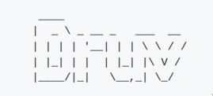

I run a homelab called Druv — an old PC that has been reliably serving for over 15 years with a few upgrades along the way.
It hosts various services and projects that I build and maintain.
Some of these are publicly accessible under *.prinzpiuz.in. Feel free to explore and use them.
| Link | Source Code |
|---|---|
| BloTils | prinzpiuz/BloTils |
| PDF Tools | alam00000/bentopdf |